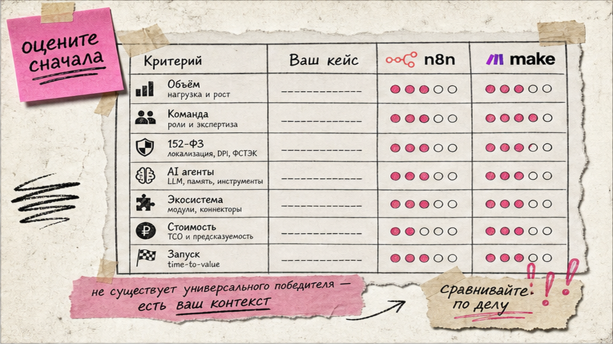
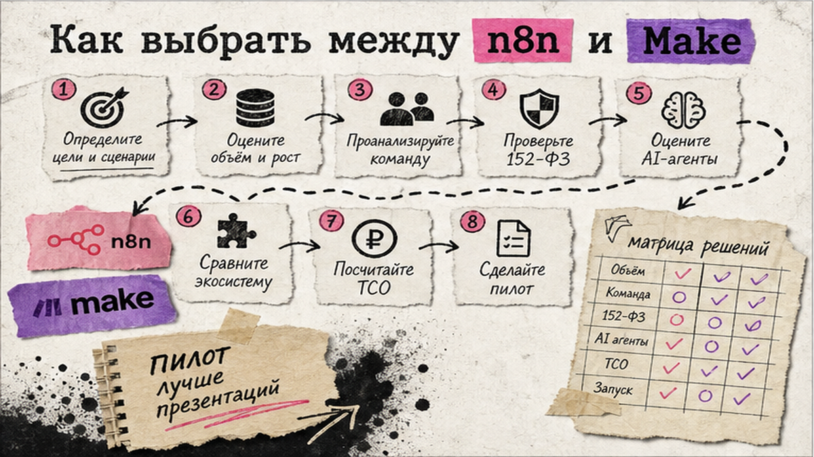
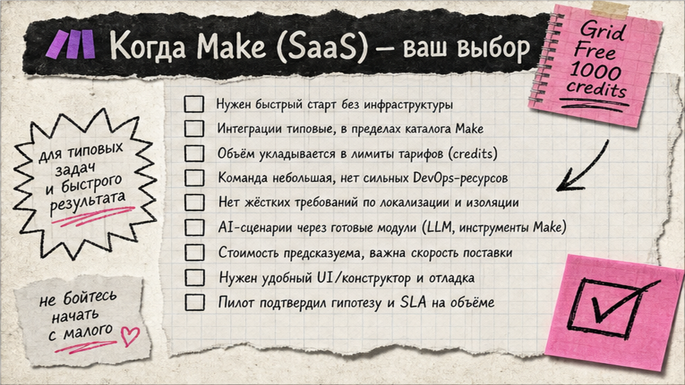

Счёт за автоматизацию растёт не от числа запусков, а от числа шагов внутри сценария? В n8n vs make это разные модели: у Make каждый модуль съедает credit, у n8n весь workflow считается одним execution. Ниже – сравнение n8n и Make.com с таблицей, матрицей из 6 бизнес-сценариев и чеклистом из 15 пунктов. После чтения вы пересчитаете свой объём, выберете платформу и тариф, а не останетесь в вечном "а что лучше".
TL;DR / Быстрый инсайт: Make.com выигрывает на коротких no-code сценариях и быстром старте без DevOps: Free 1 000 credits, Core от 12 $/мес за 10 000 credits. n8n силён там, где важны executions без штрафа за шаги, self-host под 152-ФЗ и глубокий AI (RAG, MCP). Сравните billing на своих 3–5 workflow, сверьтесь с матрицей 6 сценариев и пройдите чеклист из 15 пунктов перед пилотом.
Платформа автоматизации связывает форму, CRM, почту и ИИ в одну цепочку. В 2026 и n8n, и Make.com умеют AI-агентов, но считают потребление по-разному: с августа 2025 Make списывает credits за каждый модуль, n8n – один execution за полный прогон workflow. Запросы "n8n vs make" и "сравнение n8n и make" ведут на marketing-compare – ниже decision workflow интегратора без обещания "одна платформа для всех".

Self-hosted (свой сервер) – программа на вашем VPS, а не только в облаке вендора. DevOps – роль, которая ставит Docker, PostgreSQL и бэкапы. Webhook – входящий сигнал на URL: сайт "стучится", сценарий стартует. API (Application Programming Interface) – "розетка" связи с CRM, почтой или LLM.
Схема выбора:
Инвентаризация сценариев → пересчёт credits vs executions → команда и сроки → compliance → таблица → матрица 6 кейсов → TCO 12 мес → тариф → чеклист 15 → пилот 1 workflow
Делайте: считать на реальных сценариях, а не на "среднем бизнесе". Не делайте: выбирать платформу только по красивому интерфейсу – billing съест экономию на старте.

| Критерий | n8n | Make.com |
|---|---|---|
| Модель billing | 1 run = 1 execution, шаги бесплатны | 1 модуль ≈ 1 credit; AI может >1 |
| Старт cloud | Starter 20 €, 2 500 runs; Pro 50 €, 10K runs | Free 1K credits; Core 12 $, 10K credits |
| Self-host | CE бесплатно + infra; Business 667 €, 40K runs | Нет, только облако Make |
| Интеграции | 1 000+ + HTTP/community | 3 000+ apps, визуальный каталог |
| Код в workflow | JS/Python на всех планах | Custom functions – Enterprise; ядро no-code |
| AI-агенты | AI Agent, LangChain, RAG, MCP | AI Agents, Reasoning, Make Grid |
| Time-to-first workflow | ~30 мин cloud; дни self-host | 5–15 мин простой сценарий |
| Compliance | Self-host + cloud EU Frankfurt | Cloud; GDPR, ISO 27001 |
| Лучший объём | 100K+ runs, много шагов | Короткие сценарии до ~50K credits |
Пример: 10 шагов × 1 000 runs = 1 000 executions (n8n) vs 10 000 credits (Make). Тарифы: n8n.io/pricing, make.com/en/pricing, 08.07.2026. Делайте: запас 20–30%. Не делайте: брать Core $9 с compare-страницы – канон $12 на pricing.

Make – SaaS с drag-and-drop: Free 1 000 credits, 2 active scenarios, интервал от 15 мин – хватит на пилот "форма → CRM → Telegram". Сильные стороны: 3 000+ интеграций, Make Grid для обзора всей автоматизации, Reasoning Panel у AI Agents. Прототип короткого пайплайна на Make часто собирается на ~40% быстрее (mayai.ru) – если сценарий без тяжёлого медиа.
Маркетинговая команда без Docker, 5–10 сценариев, CRM-лиды (4 модуля, 2K runs/мес) – классика для Core 12 $. API от Core, 60 calls/min; на Free API нет.
Делайте: начинать с Free или Core и одного пилота. Не делайте: строить high-frequency polling с 10+ модулями каждую минуту – credits сгорят быстрее, чем executions у n8n.
n8n Cloud Starter 20 € (2 500 runs) или Pro 50 € (10 000 runs) – вход без своего сервера. Community Edition на GitHub бесплатна, но нужны VPS, Docker, бэкапы и обновления.
RAG (Retrieval-Augmented Generation) – ответы из ваших PDF и регламентов, а не выдумки модели: Document Loader → Vector Store → tool в AI Agent. MCP (Model Context Protocol) – стандарт "розеток" для внешних сервисов; см. подключение MCP в Cursor. Медиа-пайплайны, RAG-боты и 152-ФЗ on-prem – n8n self-host; executions предсказуемее credit burn (mayai.ru: до +35% маржи медиа).
AI-агенты в n8n: пошаговый гайд с Chat Trigger и tools.
Делайте: self-host, когда compliance или объём оправдывают DevOps. Не делайте: поднимать CE "на выходных" без плана бэкапов и мониторинга – один сбой VPS = простой всех workflow.
| Сценарий | Рекомендация | Почему |
|---|---|---|
| CRM-лиды: форма → amoCRM → Telegram (4 модуля, ~2K/мес) | Make Core | Мало шагов, быстрый старт, укладывается в 10K credits |
| Контент-пайплайн с видео/медиа (высокий credit burn) | n8n self-host | Executions без штрафа за число модулей; контроль infra |
| AI support-бот с RAG по внутренним регламентам | n8n cloud/self-host | Vector Store, on-prem данные, LangChain из коробки |
| Маркетинг без DevOps, 5–10 сценариев, Make AI Agents | Make Pro/Teams | SaaS, Grid, роли команды, variables на Pro+ |
| 152-ФЗ / персональные данные только on-prem | n8n self-host | Полный контроль хостинга и маршрута данных |
| High-frequency polling (каждую минуту, 10+ модулей) | n8n cloud/self-host | 1 run = 1 execution независимо от глубины цепочки |
Итоговый вердикт: короткие сценарии без DevOps → Make Free/Core. Многошаговые runs, RAG/MCP или 152-ФЗ → n8n; считайте TCO на 12 мес.
Делайте: сопоставить свой кейс с ближайшей строкой матрицы. Не делайте: мигрировать все Zapier-задачи разом – сначала один пилот с пересчётом tasks → credits/executions.
Делайте: UAT на копии. Не делайте: прод без алертов об ошибках.
Оценка TCO под ключ – Telegram "Ковчег".
Материал проверен: эксперт Елена Ковалева (Главный эксперт по SEO/GEO).
Достоверность данных: тарифы и модели billing верифицированы по официальным страницам n8n.io и make.com; ключевые формулировки сверены с семантическим кластером Вордстат на июнь 2026 года.
Make – короткие no-code сценарии без DevOps. n8n – многошаговые runs, self-host, RAG/MCP. Пересчитайте credits vs executions на своих workflow.
До ~50K ops/мес без on-prem – Make Free/Core 12 $. При длинных цепочках пересчитайте: n8n может выйти дешевле.
Execution vs credit за модуль. Self-host только n8n. Make – 3 000+ apps и Grid; n8n – JS/Python, LangChain, MCP.
Когда credits Make растут быстрее VPS+админки. Считайте TCO 12 мес: CE/Business + DevOps vs Make Pro/Teams.
Да: инвентаризация zaps, пересчёт tasks, один пилот, пункты 11–14 чеклиста, UAT перед отключением Zapier.
AI-модули >1 credit. Запас 30% + оплата LLM API отдельно.
Для CE self-host – да. n8n Cloud и Make – SaaS без своего сервера.